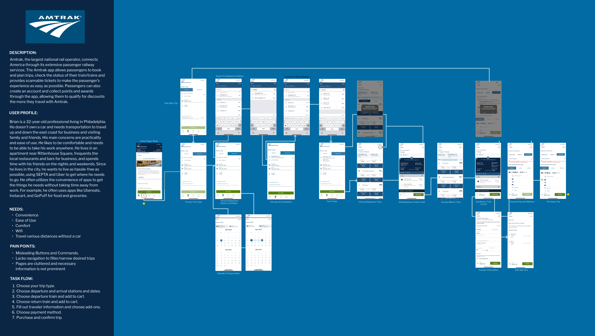

Rebranding
3.1 Text Styles
3.2 Colors
Base Colors
Gradients
3.3 Logo Redesign
Original

I conducted an in-depth analysis and redesign of Amtrak's mobile app flow. The goal was to make the task of booking a trip through the app more streamlined and visually appealing.
This project aimed to completely redesign Amtrak’s branding and aesthetic, to create a fresh, vibrant platform for todays users of all ages. The focus was on reworking the app’s flow for booking a trip, defining pain-points, interactions, and how to make them better.
I describe today's typical Amtrak user as a 20-30 something aged
man named Brian. Brian is a 32-year-old professional living in
Philadelphia. He doesn't own a car and needs transportation
to travel up and down the east coast for business and visiting
family and friends. His main concerns are practicality and
ease of use. He likes to be comfortable and needs to be able
to take his work anywhere.
He lives in an apartment near
Rittenhouse Square, frequents the local restaurants and
bars for business, and spends time with his friends on
the nights and weekends. Since he lives in the city, he
wants to live as hassle-free as possible, using SEPTA and
Uber to get where he needs to go. He often utilizes the convenience
of apps to get the things he needs without taking time away from
work. For example, he often uses apps like Ubereats, Instacart,
and GoPuff for food and groceries.
The first task was to define the IX Flow. I examined each micro interaction and defined its triggers, feedback, and loops.

The second task was to create a series of black-and-white wireframes. I wanted to make the process more visually appealing, focusing on a train aesthetic, and adding options for users to filter trips after the put in their desired dates, departure and arrival locations.
Before I rendered my animation mock-up, I mapped out the new user flow and detailed my desired microinteractions and their triggers, loops and feedback.